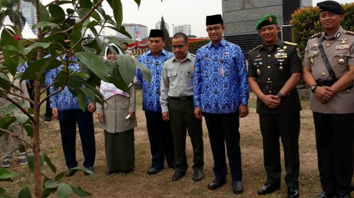

Pemkot Jakut Gencarkan Gerakan Menanam Sejuta Pohon
Pemerintah Kota Administrasi Jakarta Utara yang bekerja sama dengan Komuitas Go Green Jakarta, terus mengajak semua komponnen masyarakat dan stakeholder untuk ikut aktif melakukan aksi tanam pohon. Gubernur DKI Jakarta, Anies Baswedan pun ikut mendukung program untuk menghijaukan Jakarta Utara itu.
Anies Baswedan turut mendukung gerakan menanam sejuta pohon yang digagas Pemerintah Kota Adminitrasi Jakarta Utara. Bahkan orang nomor satu di DKI Jakarta itu turun langsung untuk menanam pohon produktif di areal Kantor Sudin Penanggulangan Kebakaran dan Penyelematan Kota Administrasi Jakarta Utara.
"Mudah-mudahan pohonnya bisa cepat tumbuh dan berbuah. Nanti kalau sudah ada buahnya kabarin ya biar saya datang lagi kesini". ujar Anies yang tampak didampingi Wakil Walikota Jakarta Utara, Junaedi. Kasudin Penanggulangan Kebakaran dan Penyelamatan Kota Administrasi Jakarta Utara dan Camat Cilincing, Purnomo.